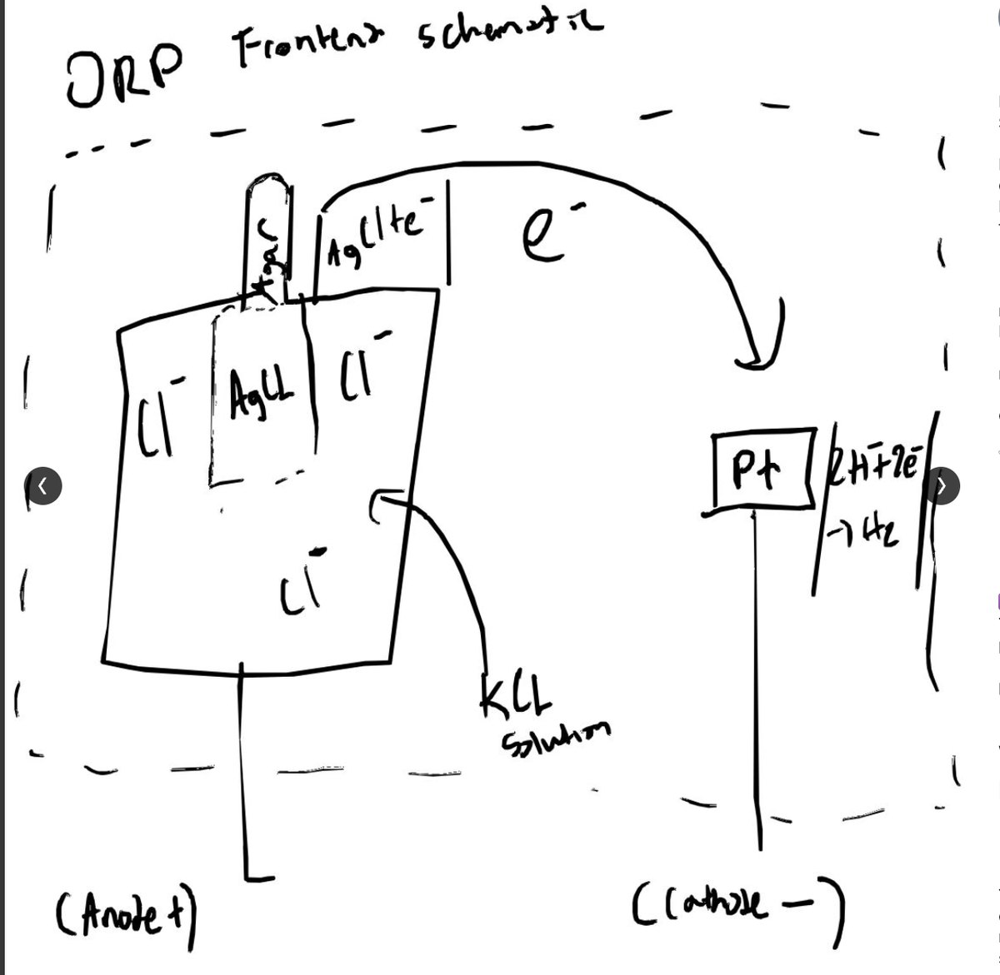
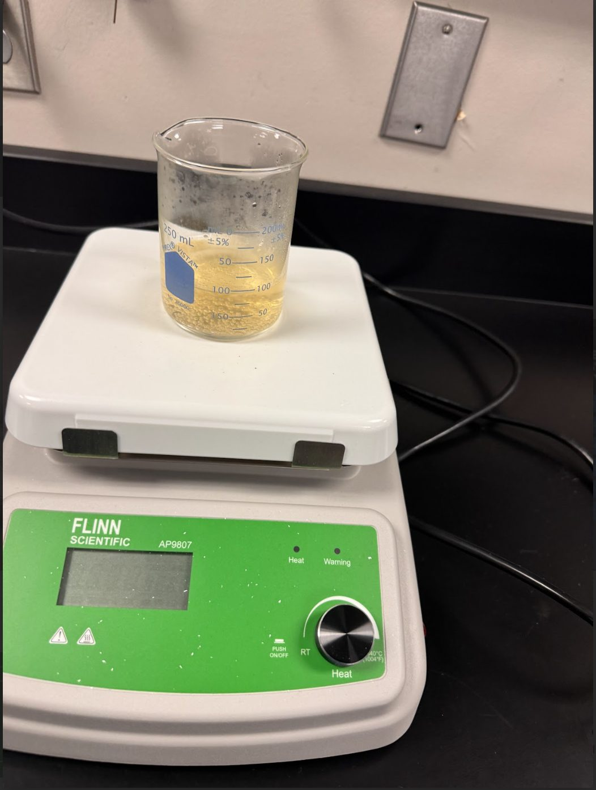
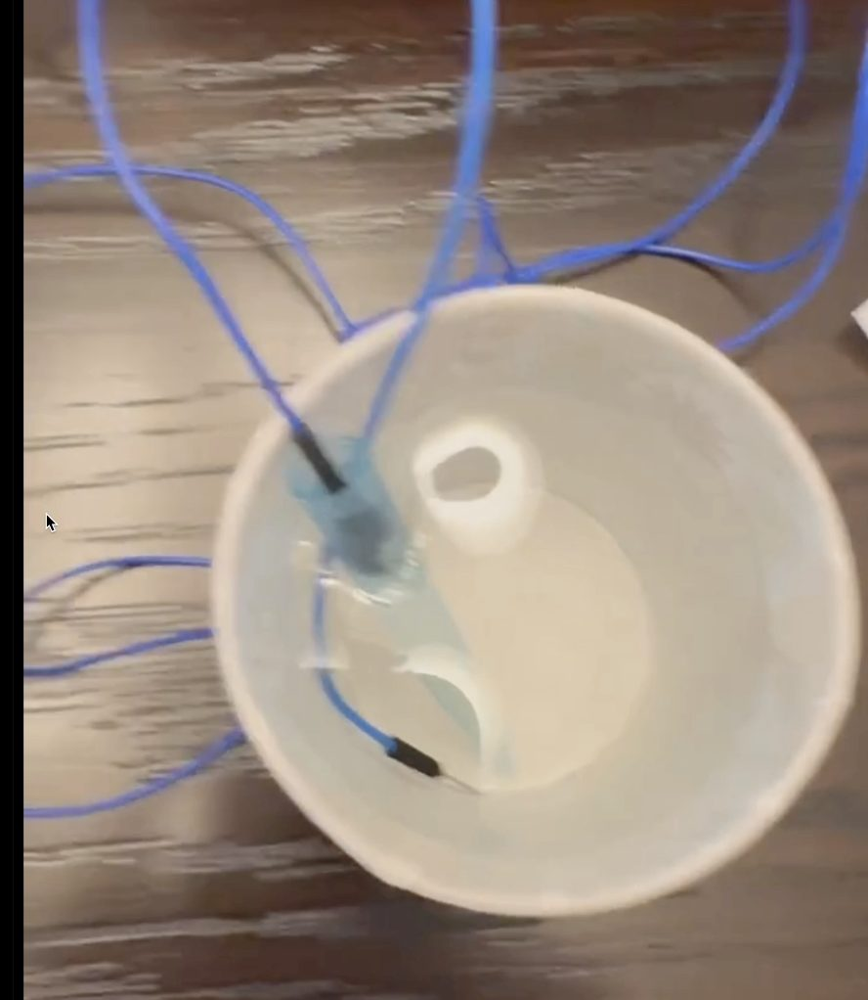
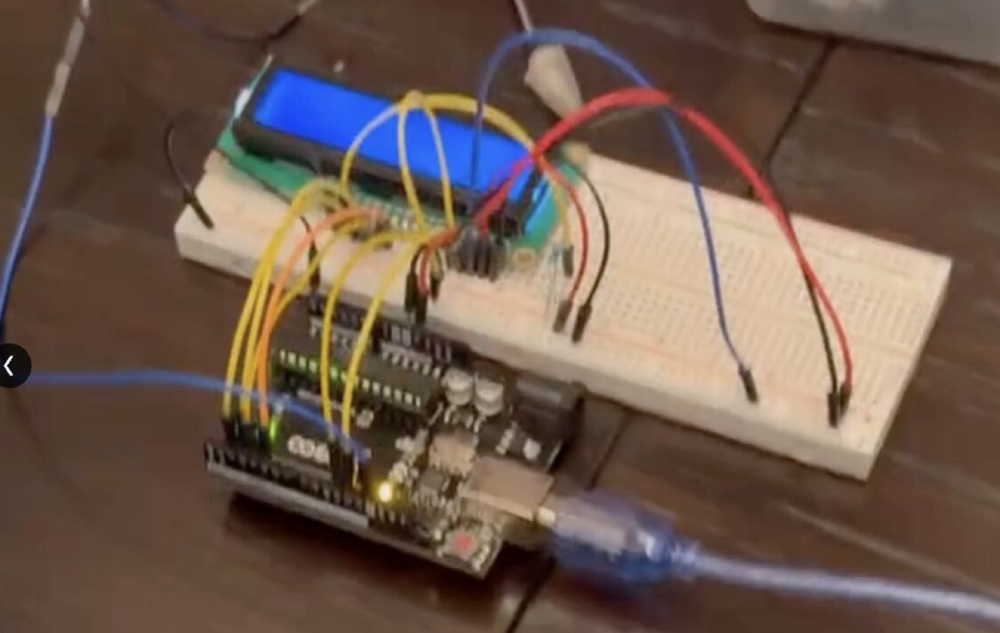
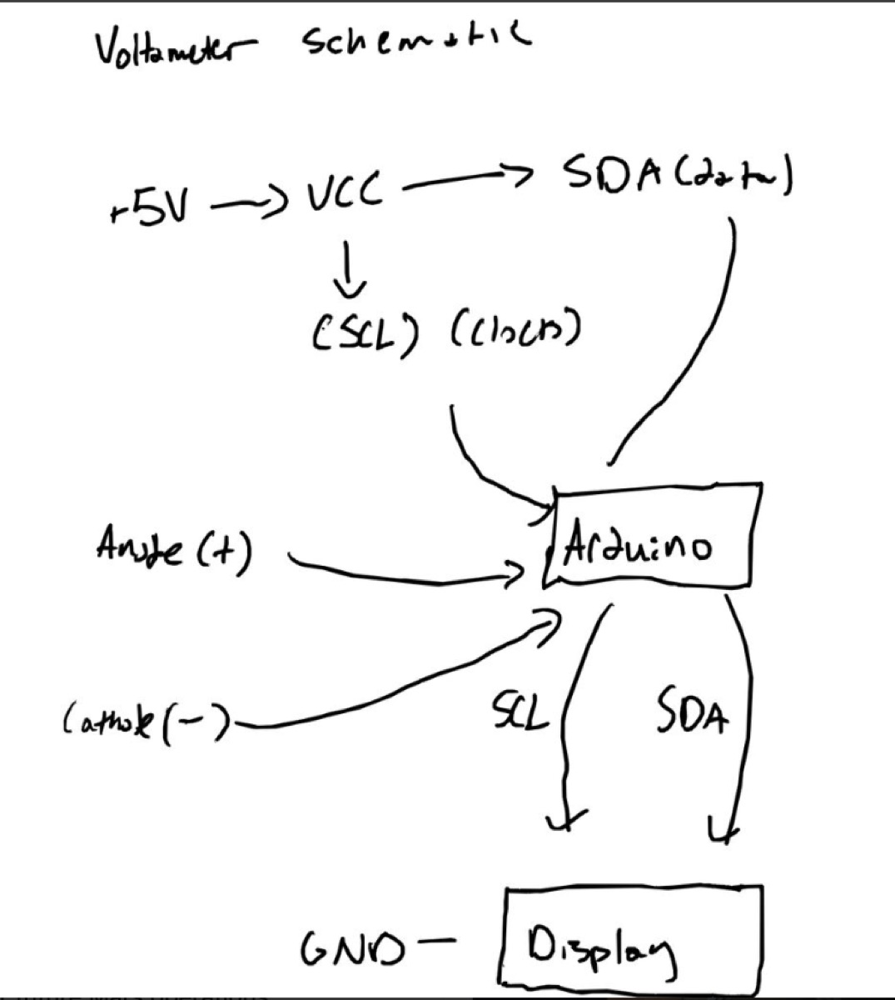

- Problem
- Measure water salinity without buying a commercial ORP probe
- Built
- The galvanic cell itself — Ag/AgCl reference in KCl, inert Pt electrode, hand-cast agar salt bridge, Arduino voltmeter, I²C display
- Range
- 250–5000 ppm, calibrated against solutions of known concentration
- Key idea
- A cell needs two loops — electrons through the wire, ions through the bridge. Break either and it stalls.
Oxidation-reduction potential summarises how strongly a solution wants to give up or accept electrons. Dissolved ions change how readily charge moves between two electrodes, so a millivolt reading maps back onto concentration. Building the cell rather than buying a probe meant solving the measurement problem and the electrochemistry problem together.
The galvanic cell
The two half-reactions
Anode (−) — Ag/AgCl in KCl
Ag + Cl⁻ → AgCl + e⁻
Silver oxidises and binds chloride from the KCl, releasing an electron. Because the chloride activity is held fixed by the KCl, this side sits at a stable known potential — that's what makes it a reference rather than just an electrode.
Cathode (+) — inert platinum
2H⁺ + 2e⁻ → H₂
Platinum is chosen precisely because it does not react. It only donates a surface for reduction, so the measured potential reflects the solution's chemistry instead of the electrode dissolving into it.
Why one electrode has to be boring
A cell potential is a difference. If both electrodes shifted with the sample, you couldn't attribute the reading to anything. Pinning one side with Ag/AgCl means every millivolt of change is attributable to the platinum side — which is where the sample is. The reference electrode isn't the measurement; it's what makes the measurement mean something.

Why a salt bridge and not just a wire
A wire moves electrons; it cannot move ions. The anode pumps positive ions into its solution while the cathode strips them out of the other. Without an ionic return path, each compartment accumulates net charge and the driving potential collapses. The bridge doesn't carry the signal — it removes the reason the signal would stop.
Casting the bridge
- Agar gel saturated with a neutral salt, cast into a U and set solid. Porous enough for ions to migrate, stiff enough to span two open beakers unsupported.
- It also stops bulk mixing — which would short the cell chemically and destroy the measurement while the meter kept reading something plausible.
- Neither of the salt's ions may participate in either half-reaction. A bridge whose ions react isn't a bridge; it's a third electrode contaminating both compartments.


Reading it

Why I²C for the display
- A bare HD44780 wants 6–11 GPIO pins in parallel mode — an unaffordable share of a 14-pin board, especially with the probe circuit and serial debugging already competing for them.
- The I²C backpack collapses that to two shared lines plus power and ground, with the address set on the backpack. Other I²C devices can sit on the same two pins.
- Everything freed up goes back to the measurement side, which is the part that actually needs the board.

From millivolts to ppm
The 10-bit ADC resolves the input span into 1024 steps. Raw count converts to a potential, which maps onto concentration against a calibration curve anchored at known salinities across 250–5000 ppm. Two limits worth stating plainly:
- Temperature. Cell potential shifts with it, so readings from a cold room and a warm one aren't comparable without compensation.
- Electrode drift. Surfaces oxidise and foul, walking the calibration out of true — the reason commercial probes specify a recalibration interval instead of promising indefinite accuracy.
What I took from it
- The invisible half of a circuit is still part of the circuit. The electron path is the one you draw; the ion path decides whether the drawing works.
- Pin budget is a design constraint like any other. I²C over parallel wasn't about elegance — it was about not spending 11 of 14 pins on an output device.
- A sensor without a calibration story is a number generator. The ADC reports a count whether or not that count means anything.